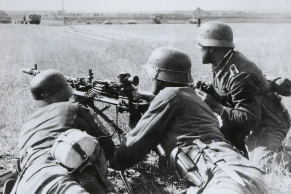

noticiario
causas da segunda guerra:
 "A Segunda Guerra Mundial teve como grande causa o expansionismo e o militarismo da Alemanha Nazista. Essa postura da Alemanha refletia diretamente a ideologia dos nazistas, que haviam alcançado o poder da Alemanha em 1933. A ação dos nazistas resultava, em grande parte, da insatisfação de uma parte radicalizada da sociedade alemã com o desfecho da primeira guerra mundial."
"Fases da Segunda Guerra Mundial"
"A Segunda Guerra Mundial pode ser dividida em três fases para melhor entendimento dos acontecimentos do conflito, a saber:"
- "Supremacia do Eixo(1942-1943): nessa fase, tornaram-se notórios o uso da blitzkrieg e a conquista de diversos locais pelas tropas da Alemanha. Além disso, na Ásia, os japoneses conquistaram uma série de territórios dominados por britânicos, franceses e holandeses."
- "Equilíbrio de forças (1942-1943): nessa fase, os Aliados conseguiram recuperar-se na guerra, tanto na Ásia quanto na Europa, e equilibraram forças com os alemães. Essa fase ficou marcada pela indefinição de quem ganharia o conflito."
- "Derrota do Eixo (1944-1945): nessa fase, o Eixo estava em decadência. A Itália foi invadida; Mussolini, deposto; os alemães e japoneses passaram a ser derrotados sucessivamente e ambos os países entraram em colapso."
pagina inicial!